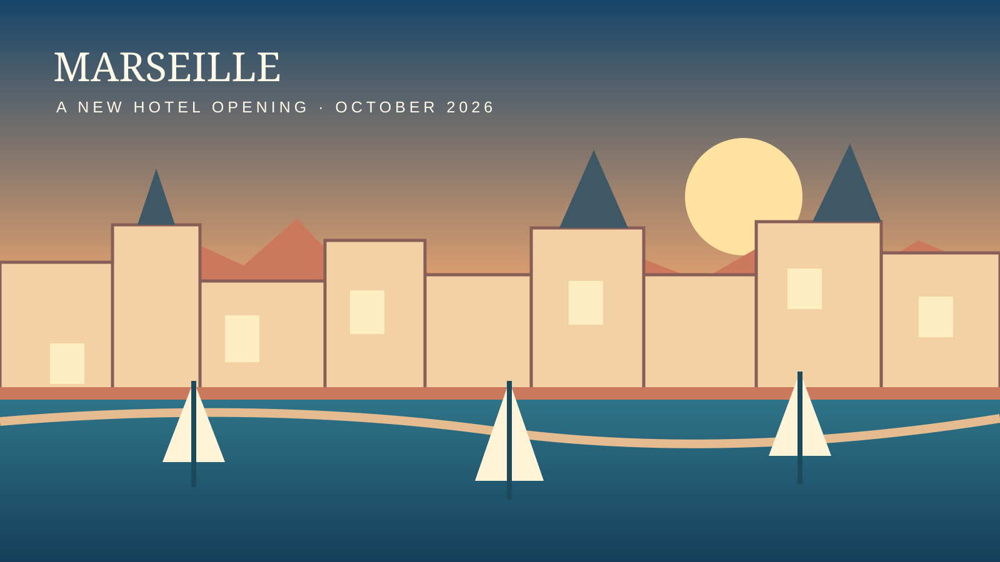

Ruby Lilou Opens in Marseille: What Travelers Should Know
FreeHotels Editorial · October 8, 2026 · Hotel openings
Marseille has a new hotel address. Ruby Lilou opened on October 5, 2026, marking the French debut of the Ruby hotel brand, now part of IHG Hotels & Resorts. For travelers planning a city break, the opening adds another design-focused option in the area around the port.

What has been confirmed?
IHG announced the opening on October 5, describing Ruby Lilou as an urban lifestyle hotel inspired by Marseille's Mediterranean identity. The brand's approach combines distinctive design with a deliberately streamlined hotel experience. The opening is also part of Ruby's expansion into France, alongside the Ruby Yani workspace concept.
Contemporary local reporting describes a 237-room, four-star property on Boulevard des Dames, with a rooftop area and coworking facilities. Those details are useful starting points, but travelers should confirm specific amenities, rooftop access rules, and room categories with the hotel before booking. Promotional plans do not always correspond to services available on every date.
Where is Ruby Lilou?
Reports place the property at 49 Boulevard des Dames, in Marseille's second arrondissement. This is a practical part of the city for visitors who want to explore central Marseille, the Joliette district and the wider waterfront. However, central location should not be confused with being directly on the Old Port: check the exact walking route and your arrival transport before committing to a stay.
Marseille is a large, hilly city. For a short visit, the right hotel location depends on whether your priorities are museums, ferry connections, business meetings, restaurants, or the coast. Look at the map rather than relying on broad descriptions such as “near the harbor.”
What makes this opening noteworthy?
New openings can give visitors more choice, but they are not automatically better value than established hotels. Ruby Lilou is interesting because it combines an international lifestyle brand with the reuse of an existing city building. Local coverage says the hotel occupies a converted former office property. Adaptive reuse is increasingly visible in urban hospitality, although any sustainability claims about a particular building require separate evidence.
The hotel's design positioning may appeal to travelers who prefer contemporary public spaces over a traditional full-service hotel atmosphere. Still, design is only one consideration. Noise insulation, bedding, accessibility, luggage storage and staff availability can matter more to the quality of a trip than an attractive lobby.
Five things to check before booking
1. Total price. Compare the final amount including taxes and any mandatory charges, not only the headline nightly rate. Prices fluctuate by travel date and booking channel.
2. Cancellation conditions. A cheaper prepaid rate may be unsuitable if flights or plans could change. Read the deadline and any nonrefundable terms.
3. Rooftop access. A rooftop mentioned in coverage does not necessarily mean unrestricted access for every guest at all times. Verify hours, reservations and whether an event might affect availability.
4. Room details. Check actual room size, bed configuration, air conditioning, accessible features and window outlook. Photos of one room category may not represent another.
5. Transport. Work out your route from Marseille Saint-Charles station or the airport and consider late-night arrivals. Central Marseille has several distinct neighborhoods with different walking conditions.
How does it fit into a Marseille trip?
Visitors staying near Boulevard des Dames can build an itinerary around the city's historic waterfront and central cultural attractions. Allow time to explore neighborhoods rather than treating Marseille as a single postcard view. For the Calanques, plan transport and check official access restrictions, especially when weather or fire risk affects trails.
For a weekend, choose one or two anchor activities and leave space for the city itself. If you want a beach-focused holiday, a centrally located urban hotel may not be as convenient as accommodation nearer the coast. Conversely, a central base can be useful for restaurants, museums and onward rail travel.
Should you book a newly opened hotel?
A new property may offer fresh interiors and a different atmosphere, but early reviews are often limited. Look for detailed feedback from guests who stayed in the room type you intend to reserve. Pay attention to recurring, concrete observations rather than a single unusually enthusiastic or negative rating.
Before making a nonrefundable reservation, confirm that the specific facilities important to you are operating. If a feature is essential, obtain confirmation directly from the property. FreeHotels has not independently inspected Ruby Lilou and does not claim to have tested its rooms or services.
Sources and editorial transparency
This report is based on the IHG opening announcement dated October 5, 2026 and local reporting by Le Bonbon. Opening details are attributed to those sources; prices and service availability should be reconfirmed with the hotel. The cover is an original editorial illustration of Marseille, not documentary photography of the property.